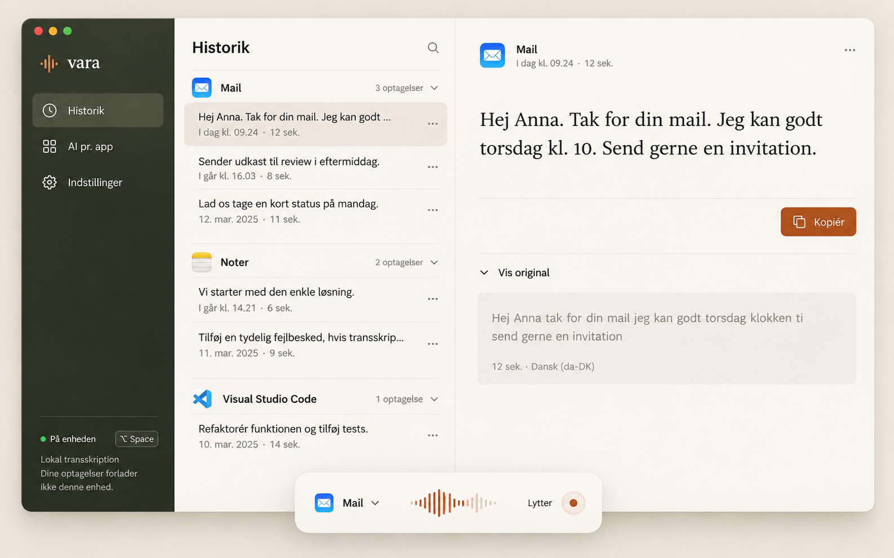
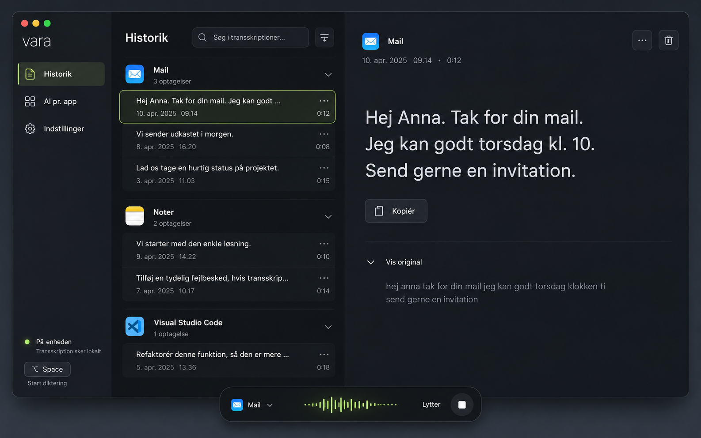
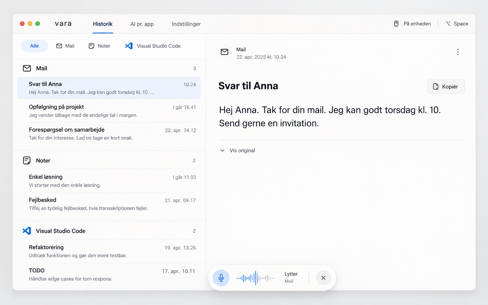

Vara / Designstudie
Til den klikbare prototype ↗Tre retninger. Samme enkle app.
Imagegen-mockups til første udgave. Klik på et billede for at se det i fuld størrelse.


01Warm precision
Varm, personlig og taktil. Oliven, creme og en diskret orange accent. Klar opdeling mellem navigation, historik og tekst.


02Midnight focus
Mørk og koncentreret. Grafit, afdæmpet signalgrøn og tydelig typografi. Et præcist værktøj til daglig brug.


03Paper calm
Lys, åben og ligetil. Navigation øverst, færre paneler og masser af ro omkring teksten.